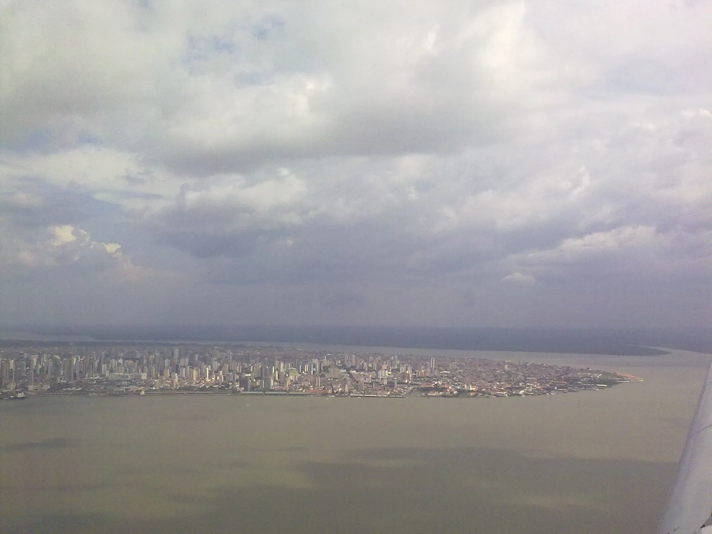
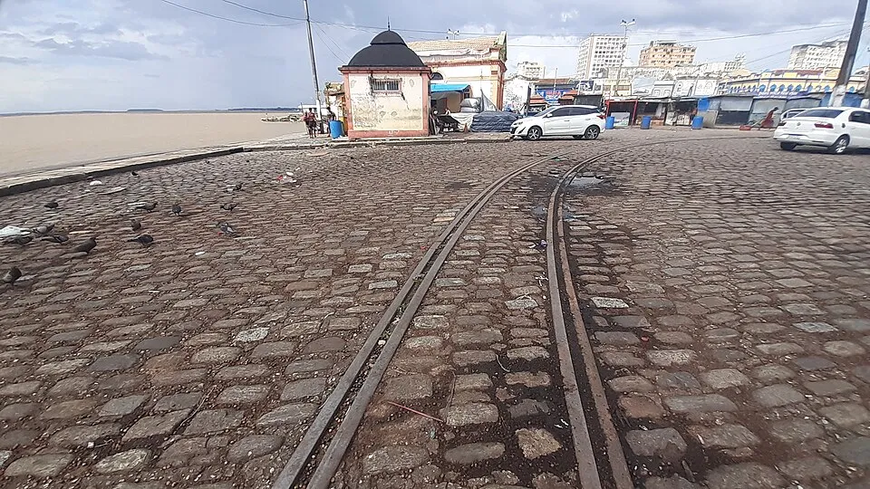
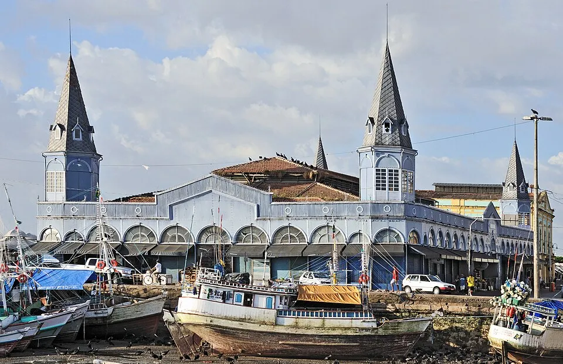

A cidade é dequem anda nela.
A MARÉ é uma empresa júnior de Belém. Escutamos os moradores, medimos os problemas da rua e entregamos soluções de acessibilidade e infraestrutura para quem decide.
Três frentes, um mesmo nome
MARÉ quer dizer Mobilização, Acessibilidade e Renovação Estrutural. Cada projeto nosso passa pelas três.
Mobilização
Reunimos moradores, escolas e comércio em torno de um problema concreto do bairro, com pesquisa e escuta.
Acessibilidade
Avaliamos ruas, calçadas e prédios para que idosos, crianças e pessoas com deficiência circulem com segurança.
Renovação Estrutural
Transformamos dados em propostas de melhoria urbana de baixo custo e acompanhamos a execução.

Serviços
Mapeamento de problemas urbanos
Pontos de alagamento, calçadas e acessos registrados com foto e local, em mapa e planilha.
Diagnóstico de acessibilidade
Visita com checklist de calçadas, rampas, pisos e entradas, e a lista do que corrigir primeiro.
Pesquisa com a comunidade
Questionários e entrevistas para entender o que mais pesa no dia a dia de um bairro.
Relatório para o poder público
Prioridades, fotos e endereços num documento pronto para prefeitura e vereadores.
Campanhas e obras de baixo custo
Ações em escolas e ruas, rampas, sinalização e jardins de chuva com orçamento enxuto.
Para quem: prefeituras e secretarias, escolas, associações de moradores, condomínios, comércio e ONGs.
Projeto atual: Mapa MARÉ
Juntamos relatos dos moradores e notícias num mapa 3D de Belém. Ele mostra onde a água para e onde a calçada vira obstáculo, para levar esses pontos a quem pode resolver.
Viu um alagamento ou uma calçada perigosa? Mande para a gente com foto e endereço. A equipe confere e coloca no mapa.
Enviar um ponto Ver-o-Peso. Foto: Ridiculopathy, CC0
Ver-o-Peso. Foto: Ridiculopathy, CC0O lixo que boia no porto é o mesmo que entope os bueiros da cidade. Por isso o mapa anda junto com campanhas no bairro.
Como a gente trabalha
Conversa
Entendemos o problema, o lugar e o que você precisa decidir.
Campo
Visitamos o local, ouvimos quem vive ali e registramos tudo com foto e mapa.
Proposta
Entregamos o diagnóstico com prioridades, custos estimados e soluções.
Acompanhamento
Ajudamos a tirar a proposta do papel e medimos o resultado.
Quem somos
Transformar problemas da cidade em dados, propostas e soluções de baixo custo, com a voz de quem vive no bairro.
Essa é a nossa missão. Em cinco anos, queremos ser referência jovem em cidade acessível e infraestrutura urbana na Grande Belém.
- Escuta ativaO problema começa na fala do morador.
- TransparênciaDados e fontes sempre abertos.
- AcessibilidadeIdosos e pessoas com deficiência primeiro.
- CompromissoSó prometemos o que entregamos.

Tem um problema na sua rua, escola ou bairro?
Conte para a gente com foto e endereço. Respondemos com uma proposta de diagnóstico, ou colocamos o ponto no Mapa MARÉ.
Contato em breve